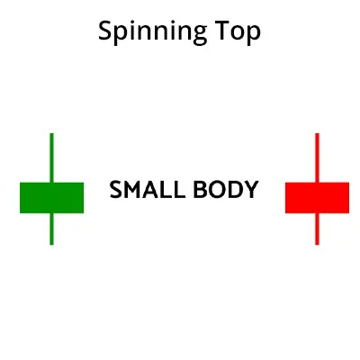
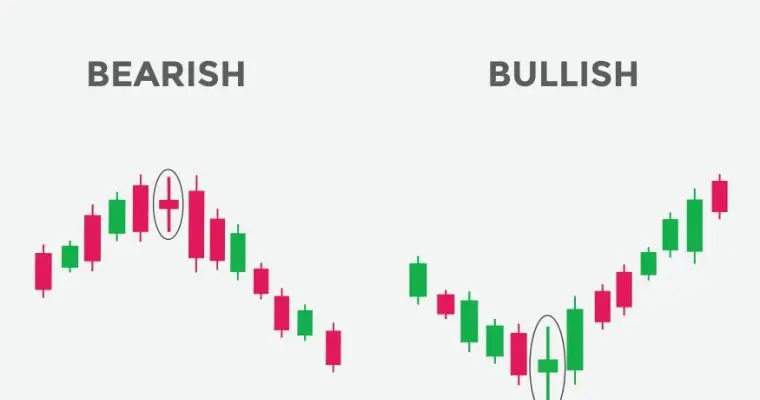

স্পিনিং টপ প্যাটার্ন হলো একটি ক্যান্ডলেস্টিক প্যাটার্ন যা বাজারে উধধ্বমুখী বা
নিম্নমুখী প্রবণতার অনিশ্চয়তা নির্দেশ করে। এই প্যাটার্নাট একটি ছোট
ক্যান্ডলেস্টিক দিয়ে গঠিত হয় যার শরীরের দৈর্ঘ্য তার উধর্বমুখী এবং নিম্নমুখী
ওপেনিং প্রাইসের মধ্যে খুব কমই পার্থক্য থাকে।
স্পিনিং টপ প্যাটার্ন একটি নিরপেক্ষ প্যাটার্ন। এই প্যাটার্নটি দেখা দিলে, বাজারে
উধর্বমুখী বা নিম্নমুখী প্রবণতার কোনও স্পষ্ট ইঙ্গিত দেয় না।
স্পিনিং টপ প্যাটার্নকে কখনও কখনও "মর্নিং স্টার প্যাটার্ন" এর সাথে বিভ্রান্ত করা
হয়। মর্নিংস্টার প্যাটার্ন একটি উধর্বমুখী প্রবণতার ইঙ্গিত দেয়, যেখানে স্পিনিং উপ
প্যাটার্ন কোনও স্পষ্ট প্রবণতার ইঙ্গিত দেয় না।
